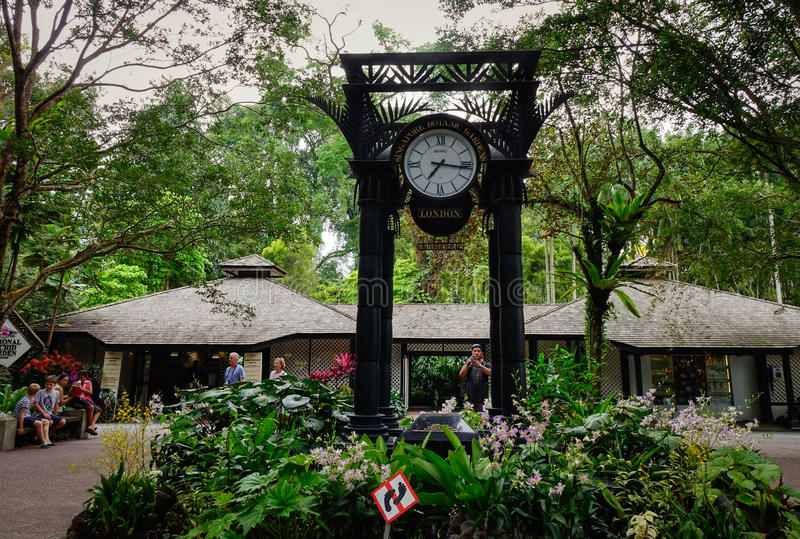
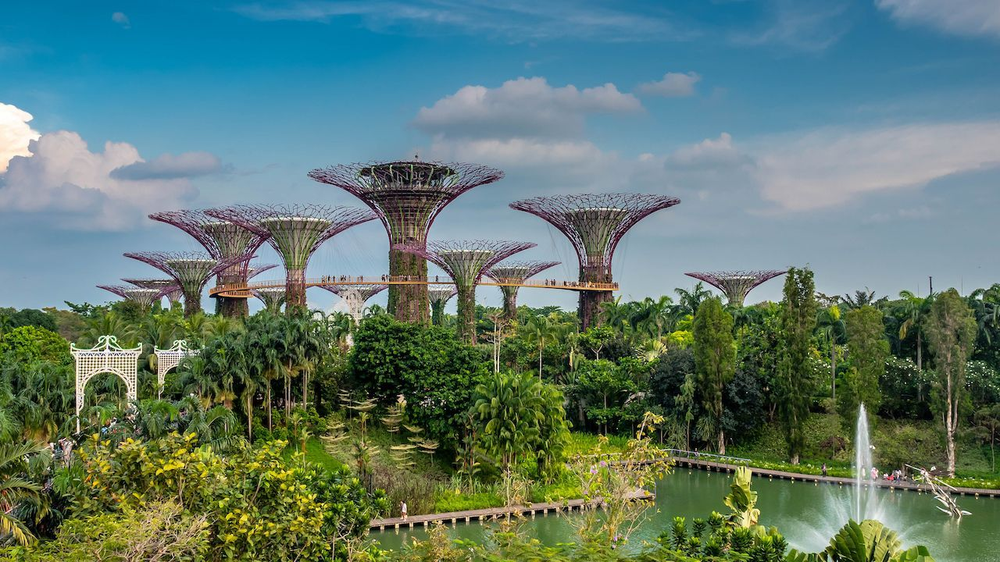
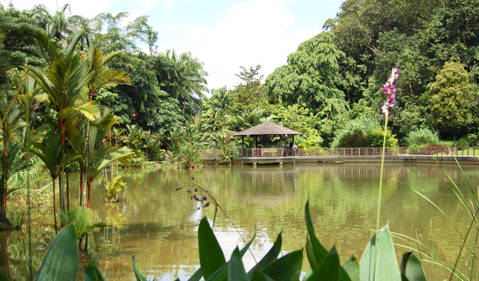
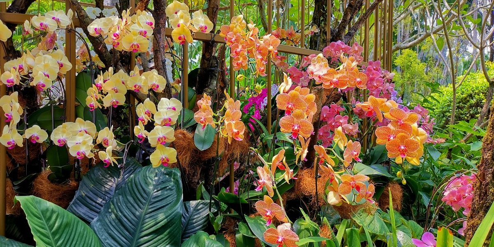

The Singapore Botanic Gardens is a UNESCO World Heritage Site in Singapore and showcases 162 years old tropical garden. This travel guide of Singapore Botanic Gardens will take you through the gardens with some fantastic photos. Enjoy!
I was animated to visit this place. It’s not that I have never been to a garden before. But I have never been to a tropical garden, which is on the list of UNESCO. And my initial impression was great even before entering the garden. First, the entry gate was delicate and sophisticated. The color and pattern imparts a soothingness the minute you look at it. It’s like a lace embroidery on a white wedding dress prepared for a princess.
Second, for this fantastic grand clock and the design surrounded by it.
As you can see, it was early in the morning for me and the weather was perfect. It was neither hot nor cold. There were few people inside the park. A lush of greeneries reminded me about the fascination of Singapore for its greeneries.
There are paved walkways in different directions. Some of them are wide, some of them are narrow. Wandering through those will offer you a notion about walking through a forest. If you stroll around for a while, you could observe the influence of the British in the garden. Once, Singapore was a British colony. Suddenly you realize that there is in fact a vast rainforest within the garden itself. How large is the rainforest? It’s six-hectare! It will not amaze me if you encounter showers when you visit there.
You can see ponds in the garden. Many people throw foods inside the ponds, expecting the fishes to take those. However, not all the fishes like the food we throw. So, they lodged an official objection to the garden authority, and they put the placard for us
So, they put a dispensing machine in place for feeding the fishes. You can buy fish foods from the machine and feed the fishes in the pond. Isn’t it nice? I was enjoying the walk. Apart from old enormous trees, there were so many types of flowers and orchids. I did not know the name of them all. But I can vouch that they are beautiful.
